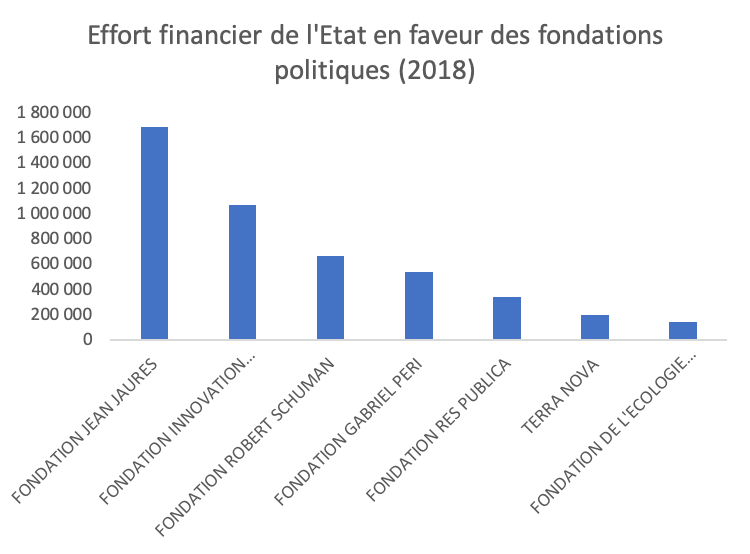

Thinks tanks : la fabrique de la propagande
Depuis les années 2000, autant de think tanks ont été créés qu’au cours du siècle passé. Affaissement de la pensée critique, affaiblissement des partis comme structures de réflexion, hybridation des élites de l’administration et du privé : plusieurs dynamiques expliquent cet essor des « boîtes à idées ».
Personne, ou presque, n’entendra parler de la manifestation des think tanks. Mais qu’attendre d’un débat entre personnalités invitées partout et d’accord sur presque tout ? Rendre populiste le populaire , cimenter le bloc bourgeois : une grande partie des « boîtes à idées » françaises contribue au maintien de l’ordre social. Pas toutes, évidemment. Certaines s’emploient à aligner notre politique étrangère sur celle des États-Unis, d’autres servent la cause sécuritaire. Et quelques-unes sont de gauche.
Selon l’université de Pennsylvanie, qui leur consacre un programme de recherche, les think tanks élaborent « des recherches, des analyses et des conseils relatifs à des politiques publiques traitant de problèmes nationaux ou internationaux [pour permettre] aux décideurs et au public de prendre des décisions éclairées ». Mais quelles différences entre ces activités et celles de cabinets de conseils ou de lobbies , de laboratoires ou de revues, d’administrations étatiques ou multilatérales ? L’Organisation de coopération et de développements économiques (OCDE) figure parmi les 203 centres de réflexion français recensés par Penn.
L’Observatoire des think tanks européens n’en labellisait que 53 en France en 2017 ; son travail de suivi amène surtout son directeur général à relever que, « depuis les années 2000, il y a eu autant de think tanks créés que pendant le siècle passé ». Pour analyser la nébuleuse qu’elles composent, pourquoi ne pas partir de cette importance que paraissent avoir prise ces « boîtes à idées » sur la période récente ? Plus de think tanks, plus d’attention accordée aux thinks tanks néolibéraux : qu’est-ce que cela signifie (I), qu’est-ce que cela implique (II) et quelles réponses cela appelle-t-il (III) ?
I. La prolifération des Think Tanks sert les intérêts de la caste qui les soutient
A. De l’hybridation des élites à la dévitalisation des partis, l’importance des think tanks dans l’espace public procède de plusieurs dynamiques
Certes il y avait eu les « sociétés de pensée » des années 1930 ou le « phénomène clubs » à la fin de la Quatrième République mais, depuis une trentaine d’années, différentes dynamiques ont contribué à un essor sans précédent des think tanks. Son point de départ se situe peut-être en 1982 : deux universitaires (François Furet et Pierre Rosanvallon) et deux hauts fonctionnaires proches des milieux patronaux (Roger Fauroux et Alain Minc) créent la Fondation Saint-Simon ; rassemblant des personnalités du monde de l’entreprise, de l’administration, de l’université et de la presse dans le but de les faire dialoguer « au-delà des barrières du clivage gauche/droite », elle pourra s’enorgueillir d’avoir fait émerger des thématiques appelées à faire florès dans le répertoire des idées conservatrices.
Les « intellectuels de gouvernement » – pour qui les élites savantes et politiques doivent se rassembler afin de « proposer des solutions raisonnables aux problèmes d’actualité » – prennent leur revanche. Car, comme l’explique François Cusset, l’université, qui abritait quelques foyers de subversion, voit décliner à partir des années 1980 « son autonomie institutionnelle et intellectuelle, au profit du nouveau pouvoir des experts, politiques et économiques. Une évolution cruciale pour comprendre la nouvelle soumission du travail intellectuel – et la disparition, sinon de la critique, du moins d’une activité de pensée protégée par la communauté scientifique de la fonction que veulent lui assigner les pouvoirs. Cette communauté-là, en effet, se rapprochent de l’entreprise ».
Le modèle de l’entreprise
En juin 2000, dans Les Nouvelles du CERI, Jean-François Bayart, directeur de ce think tank de 1994 à 2000, expliquait : « La recherche publique, en France, oscille entre deux modèles de gestion : le modèle administratif, de type hiérarchique et bureaucratique, et le modèle de la cogestion, de type plus ou moins paritaire. […] Depuis le milieu des années quatre-vingt, […] le CERI a commencé à se référer, d’abord confusément, puis de plus en plus explicitement, à un troisième modèle de gestion : celui de l’entreprise. […] Les chercheurs ont commencé à se définir comme des entrepreneurs scientifiques. L’équipe administrative a gagné en professionnalisme et en efficacité. La complémentarité entre la recherche dite appliquée et la recherche dite fondamentale a été mieux comprise. La quête de financements complémentaires par rapport à ceux que nous octroient le CNRS et surtout Sciences Po est devenue une évidence. Les relations avec les médias, les administrations et les entreprises elles-mêmes se sont développées. »
Dans les années 1990 et plus encore dans les années 2000, la haute administration se rapproche elle aussi de l’entreprise. En banalisant le recours aux cabinets de conseil, la révision générale des politiques publiques (RGPP) met fin à l’« oligopole de l’expertise légitime » organisé par les énarques et les polytechniciens. Pour conduire le processus permanent de réforme de l’administration, les élites du public et du privé œuvrent désormais de concert à la pénétration en son sein de catégories et de dispositifs longtemps envisagés comme propres au marché. A cette hybridation se conjugue un affaiblissement des institutions à même de produire une solide expertise d’État, voire leur disparition dans le cas de la direction de la prévision du ministère de l’économie.
L’univers politique aurait lui connu une évolution tenant à l’« affaissement des partis comme structure de réflexion ». Les commentateurs expliquent souvent la montée en puissance des think tanks par l’absence de travail intellectuel au sein de partis ; sans doute la présidentialisation les amène-t-elle à se concentrer un peu plus sur la conquête du pouvoir mais l’existence de cercles de réflexion à leur périphérie ne date pas d’hier. À coup plus sûr, la professionnalisation et l’intensification de la concurrence en politique ont favorisé l’accès aux responsabilités « par le haut », grâce aux titres scolaires et aux compétences qu’ils sanctionneraient. Olivier Ferrand et Terra nova, Agathe Cagé et Cartes sur tables ou Maël de Calan et la Boîte à idées : tous ont revendiqué une place en prétextant la création d’un think tank pour mieux exciper de leur jeunesse, de leurs diplômes et de leurs surfaces sociales.
Pour les ambitieux de toutes sortes, il s’agit, en tout état de cause, d’un efficace moyen d’autopromotion. Agathe Cagé, Laurent Bigorgne (Montaigne), Gilles Finchelstein (Fondation Jean Jaurès) et Thierry Pech (Terra nova) comptaient parmi les 65 « intellectuels » invités à débattre le 22 mars 2019 avec Emmanuel Macron alors que tous grenouillent dans un marais à la lisière de la politique, de la haute fonction publique et de la communication :
- Bigorgne a commencé une thèse d’histoire puis fait carrière dans le sillage de Richard Descoings comme dirigeant de Sciences Po ;
- Cagé, énarque de 35 ans, a choisi de « pantoufler » dans le conseil aux entreprises ;
- Finchelstein, ancienne petite main du courant strauss-kahnien, travaille comme publicitaire chez Havas (groupe Bolloré) ;
- et Pech, cadre CFDT reconverti dans le journalisme et l’édition, relève plutôt de la catégorie des « entrepreneurs intellectuels » à la manière de son mentor Pierre Rosanvallon.
Les think tanks ne sert pas qu’à l’autopromotion des gandins. Les Gracques, club de hauts fonctionnaires sociaux-libéraux, ont appuyé la candidature d’Emmanuel Macron, Eric Lombard en est un des membres importants et, comme le relèvent les Pinçon-Charlot, « cet ancien P-DG de Generali a été nommé directeur général de la Caisse des dépôts et consignations » en décembre 2017. Les sociologues de l’oligarchie mentionnent aussi la récompense au banquier Gilles Jacquin de Margerie : en janvier 2018, il a été nommé commissaire général de France Stratégie, think tank institutionnel chargé de déterminer les choix des politiques économiques de la France, après avoir organisé en juillet 2016 un dîner à Paris destiné à une levée de fonds au bénéfice du candidat Macron.
B. L’intervention des think tanks dans le jeu démocratique tend à en accentuer le déséquilibre
L’essor des think tanks sert surtout les intérêts des puissants qui les soutiennent : en permettant aux entreprises de financer des organisations qui interviennent dans la vie politique ou en accentuant en toute opacité l’avantage dont dispose la pensée mainstream, leur financement par les milieux d’affaires ou le gouvernement tend à déséquilibrer un peu plus encore le jeu démocratique. Certaines structures associatives telles que l’Ifrap ou l’Institut Montaigne sont en effet financées exclusivement par des dons de particuliers et d’entreprises privés alors que les fondations reconnues d’utilité publique Jean-Jaurès et Robert-Schuman, Gabriel Péri ou Fondapol ont pour principales ressources les fonds publics. D’autres, comme Attac, vivent des cotisations des militants, d’abonnements ou de droits d’auteurs et quelques think tanks ont un statut d’organisme public.
Ressources des principaux think tanks français en ? *** [à préciser + retirer la fondation Nicolas Hulot]

Certes, aucune structure hexagonale ne dispose de la puissance que la tradition philanthropique octroie aux grandes fondations politiques américaines. « Même le plus “pauvre” de ces think tanks américains, le Mises Institute (…) est avec 3,3 millions d’euros de revenus moyens annuels, aussi riche que le plus riche des think tanks français (l’institut Montaigne) explique Julia Cagé. Les ordres de grandeur, si l’on considère les autres think tanks américains, ne sont tout simplement pas comparables. Les revenus de la Brooking Institution, de l’Heritage Foundation ou encore l’Americans for Prosperity se comptent ainsi en dizaines de millions d’euros . » Exemptées de la taxe sur les sociétés, ces fondations emploient des personnels au statut fiscal privilégié et les entreprises et les personnes qui leur versent des contributions se voient accorder des déductions fiscales. En outre, certaines dispositions relatives aux impôts sur la fortune et aux droits de succession incitent les personnes fortunées à leur faire des dons de leur vivant.
Un modèle bruxellois ?
Les fondations politiques françaises souffrent aussi de la comparaison de leurs moyens avec ceux des fondations allemandes – qui, reçoivent d’importants subsides de l’État (pas moins de 580 millions d’euros en 2017 ) – ou de certains think tanks bruxellois.
Créé en 2004, actuellement présidé par Jean-Claude Trichet, Bruegel est l’un des principaux « centres de réflexion » basé à Bruxelles. Il disposait en 2017 d’un budget de près de 5 M€. L’institut serait, selon l’Université de Pennsylvanie, le deuxième think tank le plus influent au monde dans le domaine de la politique économique internationale et le cinquième dans celui des politiques publiques.
Moins de ressources donc mais, tout de même, en 2003, une évolution de la législation française : grâce aux dispositions de la loi du 1er août 2003 relative au mécénat, les entreprises qui subventionnent des « boîtes à idées » profitent d’une réduction de 60 % du montant de leur impôt sur leurs bénéfices dans la limite de 5 pour mille du chiffre d'affaires et non plus seulement d’une déduction du résultat des sommes versées dans la limite de 2,25 pour mille du chiffre d’affaires. Un dispositif beaucoup plus intéressant, un plafond relevé (du double) : la dépense fiscale est passée, dans son ensemble, de 90 M€ en 2004 à plus de 900 M€ en 2017 selon la Cour des comptes . Les magistrats n’ont pas chiffré l’augmentation de la part consacrée aux « sociétés de pensée » mais il paraît probable que ce secteur n’a pas moins bénéficié de la réforme que les autres. Et, en tout état de cause, elle a renforcé la capacité du business à peser dans le jeu démocratique.
Si depuis 1995, les partis ou les candidats ne doivent plus recevoir que des dons de particuliers, la règle, ne vaut pas pour les think tanks qui peuvent être « mécénés » par des entreprises. A la mesure de leur engagement dans la vie publique, Julia Cagé évoque un « financement déguisé de la démocratie ». Pendant la campagne de 2012, il a fallu une intervention du CSA pour que BFM TV, BFM radio ou RMC cessent de diffuser des spots de l’Institut Montaigne vantant ses propositions très proches de celles du candidat Sarkozy. En avril 2016, on apprenait que le site Internet ouvert par En Marche ! avait d’abord été domicilié chez la compagne de Laurent Bigorne, directeur de l’Institut Montaigne mais Thierry Pech a aussi soutenu le candidat Macron : un colloque de Terra Nova à Lyon en septembre 2016 aurait « tant pris des allures de meeting qu’il fallut l’annuler au dernier moment pour ne pas se ridiculiser. »
« Il n’y a pas de démocratie sans transparence »
Le 7 avril 2017, l’Institut Montaigne publie son « chiffrage » des principaux programmes. Le think tank valide le montant des dépenses nouvelles calculées par l’entourage du candidat Macron (15 milliards d’euros par an) mais ajuste le montant de celles envisagées par la France insoumise (208 milliards au lieu de 173, soit +20%) et inflige un « zéro pointé » à l’équipe de Benoît Hamon (104 milliards au lieu de 33 milliards, soit + 115%).
Dans un entretien au Télégramme de Brest, le 16 mars 2017, le directeur de l’Institut avait justifié cet exercice : « Le chiffrage, c’est la transparence, c’est obliger les politiques à tout dire de leurs intentions, et au final de leurs valeurs. […] Il n’y a pas de démocratie sans transparence. » Mais, en toute transparence, Laurent Bigorne n’aurait-il pas dû préciser au quotidien breton que, comme le mettront en évidence les Macron Leaks , il contribuait à la campagne du futur Président depuis (au moins) avril 2016 ?
L’intrusion des think tanks dans le jeu politique permet aux forces sociales qui les soutiennent de s’abstraire de principes fondamentaux : l’article 4 de la Constitution réserve la faculté de concourir « à l'expression du suffrage » aux seuls « partis et groupements politiques ». Mais il ne s’agit pas que d’une question de principe – fût-il constitutionnel – ; en pratique, la capacité à s’arranger avec les procédures régissant le fonctionnement de la vie politique française dépend, bien entendu, des intérêts que sert le think tank et, surtout, des largesses que peuvent se permettre ces intérêts.
La différence de « clientèle » n’explique cependant qu’en partie les écarts de ressources entre les diverses « boîtes à idées ». Les organismes ayant le statut de fondation politique bénéficient de l’effort financier de l’État en faveur des associations or son montant varie de un à dix (1 688 000 euros pour la Fondation Jean-Jaurès lié au PS mais en bons termes avec LREM ; 150 000 euros pour la Fondation pour l’écologie politique adossée à EELV). A la différence de ce qui prévaut en Allemagne, les critères justifiant le montant versé à telle ou telle fondation ne sont pas connus . Les versements de ces dotations serait laissé à la discrétion du chef de cabinet du Premier ministre mais comment interpréter la diminution de celle de la Fondation Gabriel Péri qui est passée de près de 700 000 euros en 2016 à 450 000 euros en 2018 ?
Effort financier de l'État en faveur des fondations politiques (2018)
Source : Projet de loi de finances pour 2018 - Jaune « Effort financier de l’État en faveur des associations »
Ni l’Institut Montaigne ni l’Ifrap ne bénéficie de ce soutien direct de l’État, dès lors qu’ils ne sont pas des fondations ; cependant, contrairement à ce que suggère le second, la puissance publique les soutient à travers la défiscalisation des dons que leur versent particuliers et entreprises. L’État, du reste, n’appuie pas les think tanks proches des milieux d’affaires qu’en leur donnant des euros. Il leur prête aussi régulièrement, nombre de ses « cerveaux », hauts fonctionnaires ou chercheurs, experts en tout genre. Ainsi, lorsqu’en juin 2015, l’Institut de l’entreprise publie une analyse des « politiques d’assainissement budgétaire et de redressement économique de l’Espagne, de l’Italie, de l’Irlande et du Royaume-Uni » coordonné par Michel Pébereau, son groupe d’experts compte deux conseillers à la Cour des comptes et six jeunes inspecteurs des finances (est-il inutile de préciser que, depuis, trois de ces inspecteurs ont rejoint les groupes Bolloré, Carrefour et Renault ?).
« Gagner de l’argent »
Dans l’« avant-propos » de son rapport pour l’Institut Montaigne sur « L’impossible État actionnaire », paru en janvier 2017, David Azéma, ancien directeur général de l’Agence des participations de l’État (APE) fait une émouvante autocritique : « Avec le recul, (…) j’ai réfléchi sur cette expérience et en suis arrivé à la conclusion que j’avais alors fait fausse route, que les termes État et actionnaire sont ontologiquement [sic] incompatibles et qu’il convient d’en tirer les conséquences. »
Par modestie peut-être, l’énarque oublie rappeler qu’il a quitté l’APE en 2014 pour devenir vice-président de la Bank of America pour l'Europe, le Moyen-Orient et l'Afrique et, surtout, comme il l’avait alors expliqué au Monde, pour « gagner de l'argent ». Par prudence sans doute, Azéma qui est désormais associé du fonds Perella Weinberg Partners n’a pas démissionné de la fonction publique .
ii. Sur la même ligne idéologique, les think tanks médiatiques contribuent à une « politique de la dépolitisation »
A. Les think tanks les plus exposés dans les médias se répartissent sur un spectre idéologique étroit
Il est convenu d’affirmer que les think tanks contribueraient à la vitalité du « débat démocratique ». La ritournelle postule l’existence d’une pluralité – relative – d’opinions mais cette diversité ne garantit pas que les points de vue aient la même force dans l’espace public. Car les idées sont portées par des groupes dotés de ressources inégales et, par conséquent, d’une capacité d’influence très variable. Sur le fond, par-delà les effets de manche des « experts » et la prétention à l’objectivité, la totalité des cercles de réflexion ayant accès aux médias dominants sont sur la même ligne ou, à tout le moins, répartis sur un spectre idéologique étroit, de l’ultra libéral Ifrap au social-libéral Terra Nova.
Inspecteurs des finances, économistes, sondeurs, journalistes : de manière générale, ces cercles recrutent en terrain bien connu et entretiennent l’entre-soi donc le conformisme idéologique. Sur les 23 administrateurs de Terra nova, quatre seulement n’ont pas « fait » Sciences Po, l’ENA, HEC ou Polytechnique. On comprend mieux, sur cette base, la thèse défendue par ce think tank progressiste en 2011 d’une inéluctable rupture entre la gauche et les classes populaires : « Plus un individu est diplômé, écrivait-il alors, plus il adhère aux valeurs culturelles de la gauche : liberté des mœurs, tolérance, ouverture aux différences culturelles, acceptation de l’immigration . » Toutefois, comme le relèvent Bruno Amable et Stefano Palombarini, « il y a un présupposé fondamental de l’enquête de Terra nova qui n’est pas du tout discuté dans le rapport : comment et par qui a été fixée la liste des valeurs culturelles de gauche ? On peut supposer que les résultats obtenus (…) aurait été différents si des valeurs comme l’égalité ou la solidarité (absentes de la liste retenue) avaient été prises en compte pour caractériser la culture de gauche . » Mais les administrateurs du think tank – chef d’entreprise ou cadres supérieurs – adhèrent-ils à ces valeurs ?
Ancien banquier, Lionel Zinsou préside le conseil d’administration de Terra nova. Il a aussi été membre du comité directeur de l’Institut Montaigne. Les principaux think tanks entretiennent des relations tout à fait cordiales. Montaigne et Terra nova ont publié ensemble en octobre 2018 un rapport intitulé « Sauver le droit d’asile » ; Fondapol et Terra nova étaient associés à la même pétition réclamant « Plus d’Europe à la télé » sur France Télévisions en mai 2014.
En septembre 2015, le think tank « progressiste » coédite Réformer le code du travail de Jacques Barthélémy, avocat, fondateur du cabinet Barthélémy, et Gilbert Cette, économiste. Le livre dénonce « la prolifération de textes légaux » et défend un « droit réglementaire ne s’imposant que de façon supplétive. » En mai 2016, l’Institut Montaigne coédite Un Autre droit du travail est possible de Franck Morel, avocat au cabinet Barthélémy, et Bertrand Martinot, économiste. L’ouvrage déplore une « loi envahissante [qui] laisse peu de place aux autres acteurs » et entend « faire primer l’accord d’entreprise ». Fondapol ne publiera pas de livre mais lance, en février 2016, une pétition intitulée « OUI à la Loi travail, non au chômage ! » Dans un article intitulé « Projet de loi El Khomri : une révolution en marche ? », l’Ifrap explique magnanime : « Nous n’avons pas trop d’occasions de nous réjouir des initiatives du gouvernement pour ne pas reconnaître le courage avec lequel il s’attaque à une véritable réforme du droit du travail . »
Les auteurs de Terra nova passeront sur France Inter, France Culture, France Info, Arte, LCI et BFM qui invitera également ceux de l’Institut Montaigne. La promotion médiatique du livre de Martinot et Morel sera aussi assurée par La Croix, Le Monde, Le Parisien, La Tribune et Les Echos. A la même période, l’initiative du groupe de recherche pour un autre code du travail (GR-PACT), une vingtaine d’universitaires ayant entrepris l’écriture complète d’un autre code pour démontrer qu’il serait possible de faire plus court, plus protecteur et mieux adapté aux difficultés de notre temps bénéficie, par comparaison, d’une exposition minimaliste (ce qui reste de la presse « de gauche », France Culture, France 24…).
De manière générale, l’appropriation des médias par des oligarques - qui souvent financent les think tanks libéraux – joue, en faveur de ces « boîtes à idées ». Lorsque l’Institut Montaigne met en ligne en janvier 2017 un rapport très hostile à l’État actionnaire , la publication fait l’objet d’une chronique enthousiaste le 24 janvier sur BFM (propriété de Patrick Drahi), d’un entretien avec son auteur le 27 janvier sur Radio Classique (propriété de Bernard Arnault), d’articles élogieux le 23 janvier dans Le Figaro (propriété de Serge Dassault), le 25 janvier dans Le Monde (propriété de Xavier Niel) et le 26 janvier dans Les Echos (propriété de Bernard Arnault) ainsi que d’une chronique dithyrambique le 2 février dans Le Point (propriété de François Pinault). Un détail sans doute : en août 2006, l’Institut Montaigne publiait un rapport intitulé « Comment sauver la presse quotidienne d’information » qui défendait la concentration du secteur des médias et la mise en cause des droits existants de ses salariés.
Ne disposant pas d’instances équivalentes à celles de l’univers académique (revues, colloques, séminaires…), les think tanks ont besoin des médias pour faire connaître leurs productions (voire pour se faire connaître en l’absence de production…). Mais, fournisseurs de contenus, ils garantissent en retour aux journalistes de la nouveauté et de la prise de hauteur intellectuelle. La publication du manifeste d’une « boîte à idées » de jeunes énarques constitue un événement éditorial alors que les think tanks plus « installés » alimentent presse, radios et chaînes d’information en tribune, chroniques ou entretiens. Leurs porte-paroles participent à des débats hebdomadaires sur Europe 1 (Agnès Verdier-Molinié de l’Ifrap) ou France Culture (Thierry Pech de Terra Nova). Les Echos ont confié le chiffrage des programmes de la présidentielle 2017 à l’Institut Montaigne quand Le Monde organise des « événements » avec le Cercle des économistes ou fait commenter des sondages par Gilles Finchelstein de la Fondation Jean Jaurès.
De tels liens organiques procèdent aussi, bien entendu, de rapports de sympathie idéologiques. Le 24 mars 2019, Erwan Le Noan intitulait sa chronique pour le quotidien libéral L’Opinion « Vive les think tanks ! » et y faisait l’éloge des travaux récents du libéral Institut Montaigne ou de la très libérale Fondapol (Le Noan est membre du conseil scientifique de cette fondation). « Vive les vrais médias qui eux jamais ne mentent ! » aurait pu s’intituler l’article publié sur le site de la Fondation Jean Jaurès le 14 janvier 2019 : signé par Roman Bornstein, journaliste à France Culture, cette « immersion numérique avec les gilets jaunes » décrivait les « mécanismes de radicalisation » ou le « rapport défiant, voire haineux qu’entretiennent [les membres des groupes Facebook de gilets jaunes] avec les médias traditionnels. »
A en croire Laurent Bigorgne, il y aurait même « dans ce pays une forme, pour la première fois, de menace sur la démocratie. Ce sont des entités comme Terra nova, j’espère comme Montaigne, comme les autres think tanks, qui non pas constituent la solution, ni le remède, mais qui sont à mon avis indispensables pour que continue de vivre la confrontation d’idées et donc la démocratie dans notre République . » Comme on l’enseigne à Sciences Po, la réalité est toujours « plus complexe » ; voire plus médiocre dans le cas de Terra nova. Au cours de son enquête sur ce think tank en 2009, Alexander Zevin devait constater que les centaines de notes « produites par le cercle de réflexion [étaient] bien plus remarquables par leur profusion étourdissante que par leur contenu ou leur cohérence idéologique . » La consultation du site internet de Cartes sur tables, un petit think tank hamoniste, laisse un peu la même impression : une dizaine de notes bâclées (pour soutenir l’entreprise, « moteur de la transition écologique ) mais trois ou quatre fois plus de références à des interventions dans les médias d’Agathe Cagé, sa principale porte-parole.
Réarmer la pensée conservatrice
« Importer le modèle de think tank américain » : tel était le projet du fondateur de Terra nova. Olivier Ferrand se référait, plus précisément aux succès obtenus par le Center for American Progress (CAP) fondé en 2003. Après avoir alimenté la campagne démocrate en propositions puis coordonné la transition avec l’administration Bush (fils), ce think tank progressiste avait publié en janvier 2009 Change for America, un ouvrage dont Barack Obama devait s’inspirer comme Ronald Reagan avait scrupuleusement appliqué le « mandat pour le leadership » conçu par la Heritage Foundation en 1981 ou comme George Bush (père) avait décliné l’« ordre du jour conservateur » élaboré par la même fondation en 1988.
De nombreux travaux attestent du rôle essentiel joué par les think tanks Outre-Atlantique mais surtout pour réarmer la pensée conservatrice . Dans tous les domaines, de la fiscalité à la répression pénale en passant par la politique étrangère interventionniste, les officines conservatrices – la Heritage Foundation ou le Cato Institute, puissant vecteur des idées libertariennes – ont mené une guerre idéologique de haute intensité afin de réorienter les politiques publiques dans un sens favorable aux milieux d’affaires. Plus récemment, le Project for the New American Century (PNAC), think tank néoconservateur proche de l’administration Bush (fils), a joué un rôle majeur dans le déclenchement de la guerre en Irak en 2003.
B. Les think tanks contribuent à une « politique de la dépolitisation »
A l’encontre de ce qu’ils prétendent être ou faire, le rôle politique des think tanks ne consiste pas tant à produire des idées neuves qu’à faire circuler un ensemble de croyances et à imposer des thèmes et des problématiques dans l’agenda médiatique et politique.
Comme l’expliquait Pierre Bourdieu et Luc Boltanski dans leur célèbre article sur « La production de l’idéologie dominante », l’exercice de cette fonction implique toutefois, en premier lieu, « une parade permanente de l’objectivité et de la neutralité, c’est-à-dire de l’autonomie, parce que leur pouvoir proprement politique de dépolitisation est à la mesure de leur capacité d'imposer l’illusion de leur indépendance par rapport à la politique et de dissimuler ainsi que les juges sont aussi partie . » La parade, précisaient les sociologues, peut revêtir la forme d’une « confrontation organisée [rassemblant] des agents qui occupent souvent simultanément – des positions éloignées dans le champ de la classe dominante et/ou expriment les intérêts attachés à ces différentes positions. »
La majorité des « boîtes à idées » servent en ce sens à mobiliser des fractions de cette classe dominante. Ces institutions fonctionnent ainsi comme des lieux d’échanges – de pensées mais aussi de services, d’amabilités, etc., à la manière d’un club social, – entre les membres de différents univers sociaux qu’elles rassemblent dans des endroits dignes de leurs rangs. Les rencontres annuelles du Cercle des économistes se tiennent ainsi chaque année à Aix-en-Provence, pendant le très chic festival d’art lyrique.
Petit déjeuner à l’Institut Montaigne.
Entre autres événements, l’Institut Montaigne organise, pour les seules entreprises adhérentes, des petits déjeuners (parfois des déjeuners) qui sont l’occasion de rencontres avec des personnalités. Les invités relèvent, à part égale, de deux catégories. Parmi les dirigeants d’entreprises, on trouve, outre certaines célébrités, tel Carlos Ghosn ou Jared Cohen, des banquiers (le directeur général du groupe Crédit agricole, le P-DG d’Unicredit Group, le managing director de Lazard…) et des représentants de grandes entreprises, de l’énergie notamment comme le directeur général d’Engie France.
La composition du second groupe, celui des dirigeants de l’État, donne à voir l’importance des liens qu’entretient ce think tank avec le pouvoir : le premier ministre Edouard Philippe et le secrétaire général du gouvernement Alexis Kohler, des responsables politiques (la présidente de la commission des lois de l’Assemblée, Yael Braun-Pivet ) et des fonctionnaires de très haut niveau (le directeur général des affaires politiques et de sécurité du Quai d’Orsay, Nicolas de Revière) ont été invités à déguster des brioches en dissertant sur l’action du gouvernement avec les amis de M. de Castries (président de l’Institut Montaigne, ancien P-DG d’Axa).
Parmi les invités, un seul syndicaliste : Laurent Berger, secrétaire général de la CFDT. Les intellectuels français ou étrangers sont rares ; les plus médiatiques (tels Jean-Marc Daniel, Nicolas Baverez ou Gilles Finchelstein) amusent la galerie lors d’événements ouverts au public.
Il ne faut pas distinguer, ajoutent Bourdieu et Boltanski, « dans la production du discours dominant, entre ce qui est production et ce qui est circulation : les propriétés les plus spécifiques du produit […] sont produites dans et par la circulation même et, plus précisément, dans et par la structure cachée du champ de production qui en fait le lieu d’une circulation circulaire propre à produire un effet d’autoconfirmation et d’autorenforcement ». La présentation du projet de loi de transformation de la fonction publique le 27 mars 2019 n’a ainsi pas seulement été précédée par la publication en février d’une expertise critique de l’inspection générale des finances sur le travail des fonctionnaires de l’État mais également, le 15 mars, d’un rapport de l’Institut Montaigne soutenant la banalisation du recours au contrat, plutôt qu’au statut, prévue par le gouvernement . L’auteur du rapport pour le think tank patronal, Jean-Ludovic Silicani, conseiller d’État, avait déjà rédigé en avril 2008 un « Livre blanc » sur l’avenir de l’administration qu’il a pu décrire comme un « enfer réglementaire » dans un autre rapport, pour le très libéral think tank Génération libre .
De toute façon, c’est bien connu, « la réforme de l'État n’est ni de droite ni de gauche, comme l’expliquait en 2007 Franco Bassanini, président du cercle de réflexion italien Astrid. Elle est nationale parce que nécessaire pour engendrer concurrence et croissance . » Les « boîtes à idées » contribuent, en deuxième lieu, à une « politique de la dépolitisation » en imposant une reformulation technique des enjeux, souvent en termes de « politiques publiques ». Les think tanks (et d’autres instances, évidemment) revendiquent une capacité à « objectiver » les questions sociales en en évacuant la dimension conflictuelle ou en occultant les partis-pris idéologiques présidant à leurs problématisations. Pendant plus de vingt, les discours experts sur le « trou de la sécu » et son abyssal déficit en milliards d’euros ont ainsi justifié l’inexorable politique de déremboursement et de réduction des prestations conduits par les gouvernements de droite comme de gauche.
Comme chacun peut s’en apercevoir en allumant sa radio le matin, le débat démocratique est saturé par les expertises d’autorité, en particulier par celles se rapportant aux chiffres – ou : quand « l’idéal d’une gouvernance par les nombres tend à supplanter celui du gouvernement par les lois . » L’écho médiatique donné, entre autres, aux publications d’une officine patronale comme l’Institut de l’entreprise ou d’un think tank gouvernemental comme le CAE contribuent ainsi à perpétuer l’« ordre de la dette » en dramatisant son niveau ou celui des dépenses publiques rapportées au produit intérieur brut et, surtout, en occultant en quoi la situation actuelle résulte d’une « politique des caisses vides » délibérément menée depuis les années 1970.
Hégémoniques au sens gramscien, les forces sociales qui soutiennent Fondapol, l’Institut Montaigne ou Terra nova, n’entendent plus seulement convaincre le peuple mais, en dernier lieu, dépolitiser en limitant la part qu’il pourrait prendre aux délibérations en remettant en cause sa souveraineté ; un peuple simple « partie prenante » en « concurrence avec d’autres acteurs : les marchés, les experts, la “ société civile ” »… que représentent les think tanks. Sur la période récente, l’Assemblée nationale et le Sénat ont ainsi fait le choix d’auditionner Gaspard Koenig (Génération libre), Agnès Verdier-Molinié (Ifrap), Laurent Bigorgne (Institut Montaigne), Jean-François Ouvrard et Amandine Brun-Schammé (Coe-Rexecode) ou Agathe Cagé (Cartes sur tables). L’institutionnalisation des « boîtes à idées » revêt aussi la forme de cooptation au sein d’instances administratives de plus ou moins haut niveau. Le « startuper » Gilles Babinet, a été nommé en 2018 vice-président du Conseil national du numérique alors qu’il est, de longue date, le référent de l’Institut Montaigne sur ce sujet. Laurent Bigorgne était, lui, membre de CAP 22, le comité installé par Emmanuel Macron et Edouard Philippe pour concevoir leur projet de réforme de l’État.
Expertises publique et privée : l’hybridation
Le processus d’institutionnalisation de l’expertise privée fonctionne d’autant mieux que les organismes publics ayant vocation à accompagner la prise de décision politique s’affaissent ou s’hybrident pour devenir des lieux de réflexion dont les publications, sur le fond comme sur la forme, ne se distinguent plus guère de celles des think tanks. France Stratégie, qui a succédé au Commissariat général au Plan, est le produit de la combinaison de ces deux tendances mais il faut aussi évoquer l’alignement « éditorial » de la Cour des comptes.
En décembre 2005, M. Michel Pébereau, alors PDG de la BNP et président de l’Institut de l’entreprise, remet un rapport intitulé Rompre avec la facilité de la dette publique qui impose « l’image du bébé qui naît avec 20 000 euros de dette publique ‘‘ sur le paletot ’’ » ; pour que la Cour existe dans ce « débat », très relayée par les médias, son Premier président, Philippe Séguin, décide en 2006 que le rapport public annuel s’ouvrirait dorénavant systématiquement par un chapitre sur la dette et les problèmes qu’elle pose (à la France, à son économie et aux bébés à naître…).
Par leurs discours, les think tanks néolibéraux soutiennent un projet de restauration sociale ; par leur pratique des institutions, ils contribuent à une entreprise de restauration politique. Reprendre aux classes dominées ce qui a été concédé par l’instauration du suffrage universel en contenant leur faculté de participer à la délibération. Voire en la suspendant : en mars 2019, Fondapol a proposé, dans le cadre du grand débat , l’instauration de l’impôt volontaire qui laisserait le contribuable libre, en grande partie ou en totalité, de choisir l’affectation de son impôt . La représentation nationale ne disposerait plus d’aucune marge de manœuvre dans le choix de cette affectation. Une proposition farfelue ? Il faut prendre au sérieux la capacité d’influence des relais patronaux : en novembre 2002, soit quelques mois avant la promulgation de la loi de 2003, l’Institut Montaigne (qui en a bien profité depuis) publiait « 25 propositions pour développer les fondations en France » dont la 20e et la 21e consistaient, précisément, à rendre le mécanisme fiscal en faveur du mécénat « plus attractif » en le transformant en une réduction d’IS de 50% et en portant le plafond à 5 pour mille du chiffre d’affaires…
iii. Pour un service public de l’information économique et sociale
A. Clarifier les modalités de financement du jeu démocratique, inventer un service public de l’information économique et sociale
Après l’incendie de Notre-Dame de Paris, l’indécence de quelques grandes fortunes trop promptes à médiatiser leur générosité a mis au jour le problème démocratique que posent, de manière très générale, ces dispositions en faveur du mécénat. Il est en particulier urgent d’en finir avec le financement déguisé de la vie publique qu’elles autorisent aux entreprises soutenant des think tanks et d’abaisser le plafond du montant des dons des particuliers aux sociétés de pensée constituées sous la forme d’association.
S’il n’est pas moins urgent d’obtenir du gouvernement qu’il clarifie les critères d’attribution de ses subventions aux fondations politiques, il faut aussi (et surtout) concevoir, dans la durée, un nouveau modèle de financement de la vie publique : l’instauration de bons pour l’égalité démocratique (BED) proposée par Julia Cagé, soit la faculté pour chaque citoyen de choisir le parti ou le mouvement politique auquel il veut allouer le montant de financement public qui lui est attribué, pourrait aussi profiter aux fondations politiques reconnues d’utilité publique . Il serait intéressant, de surcroît, que pour conduire certains projets dans la durée, ces fondations bénéficient du concours de la banque de la démocratie imaginée pour le financement des campagnes électorales par François Bayrou (mais abandonnée par Nicole Belloubet).
Les fondations politiques auraient ainsi la capacité financière de salarier une équipe, administrative et éditoriale, sans avoir à détourner des serviteurs de l’État ou des collectivités de l’exercice de leurs missions. En tout état de cause, sans même attendre la mise en place de ce nouveau système, il convient d’interdire le principe de la rémunération des « ménages » ou des « piges » effectués par les hauts fonctionnaires pour des think tanks. La Commission nationale de contrôle des comptes de campagne et des financements politiques (CNCCFP) doit voir son champ de compétence étendu et ses moyens d’investigation accrus afin d’examiner le fonctionnement des « sociétés de pensée » impliqués dans le jeu démocratique.
Pour résister à la pensée mercenaire, il conviendrait également de redonner une ambition à l’expertise d’État et, surtout, des moyens à tous les grands organismes publics en charge de la connaissance, de sa diffusion ou de son utilisation dans l’élaboration des grands choix de société. Une révision générale de l’expertise publique (RGEP) permettrait d’identifier d’éventuels doublons (qu’on pense aux très nombreux corps d’inspection), des organismes moins utiles que d’autres (à quoi sert le Haut conseil des finances publiques ?), et partant de redéployer des crédits nécessaires.
Renforcer l’expertise d’État : il le faut, sans aucun doute, mais cela ne sera pas suffisant compte tenu de la capacité d’influence des experts à gage et, surtout, du rapport de dépendance des institutions publiques au pouvoir politique. En janvier 2009, François Ruffin avance dans Le Monde diplomatique (« Partage des richesses, la question taboue »), que la part des salaires dans le produit intérieur brut français a baissé de 9,3 % en vingt ans soit plus de 100 milliards d’euros en partie transférés vers le capital. L’article suscite beaucoup de réactions, des débats jusqu’à ce que « pour calmer les nerfs du pays, l’Elysée - et le MEDEF – [passent] à la contre-attaque. Eux n’ont pas fait des affiches, des saynètes, des chansons, racontent Ruffin dans Fakir. Non : ils ont commandé un rapport. A Jean-Philippe Cotis, le directeur de l’INSEE. Rendu le mercredi 13 mai 2009, il a aussitôt déclenché, en une seule journée, plus d’articles, de reportages, de chroniques dans les médias que nos patients efforts n’en récolteront jamais. »
Peut-être porteraient-ils davantage si nous nous inspirions des principes d’un rapport publié en 1979 à la demande de Raymond Barre pour permettre le contournement de « l’oligopole administratif constitué de l'INSEE et de la direction de la Prévision ». Ses deux auteurs préconisaient déjà la création de centres de prévision macroéconomique « indépendants » pour « contribuer à élargir la gamme des questions sur lesquelles porte le débat ». Leurs recommandations seront suivies. L’Observatoire français des conjonctures économiques (OFCE), centre universitaire, est créé en 1981 de même qu’un centre de prévision proche du patronat (IPECODE devenu REXECODE quelques années plus tard) et, en 1982, naît l’Institut de recherche économique et social (IRES), un centre réunissant dans son conseil les grandes centrales syndicales .
Sur le même principe, mais dans une perspective autrement plus ambitieuse, il faudrait aujourd’hui envisager la conception d’une infrastructure qui serait à la disposition de toutes celles et de tous ceux qui ont besoin de faire expertiser ou contre-expertiser une question d’intérêt général. Le nouveau service public de l’information économique et sociale (SPIES) aurait la charge de réguler l’accès aux données publiques nécessaires à l’approfondissement de ces questions ou aux systèmes d’information publics qui permettent de traiter les données, de proposer des prestations de recherches documentaires ou la mise à disposition d’un service administratif, de moyens académiques, voire d’une expertise citoyenne (celle d’une association, notamment).
Il conviendrait, évidemment, de préciser les conditions de publicité des conclusions de ce travail. En reprenant l’exemple de la controverse sur le partage de la richesse, un travail complémentaire aurait pu alors être commandé par le journal Fakir à un laboratoire universitaire sur la base d’un cahier des charges conçu par des économistes proches du journal. La direction du Trésor du ministère de l’économie et l’Insee n’aurait pas alors eu seulement l’obligation de mettre l’ensemble de leurs données et de leurs modèles à la disposition des chercheurs ; l’un et l’autre auraient aussi dû publier, sur leurs sites respectifs, les conclusions du contre-rapport.
L’expertise sert l’intérêt général quand elle vise à éclairer la prise de décision publique mais aussi quand elle contribue à la vitalité du débat démocratique. Le nouveau service public de l’information économique et social devra donc disposer de ressources dont le montant et la nature ne le placent pas dans une situation de dépendance vis-à-vis de l’État. Un financement social sous la forme d’une cotisation paraît le mieux adapté. Comme les autres cotisations, elle abonderait les recettes d’une caisse en charge de la satisfaction de ce besoin démocratique et gérée de manière tripartite par des représentants des partis politiques, des syndicats et du monde associatif. La gestion du service public pourrait être déléguée à des caisses en charge des controverses de portée plus locale : la politique d’aide aux entreprises d’un exécutif régional, la gestion des transports dans une agglomération, la réintroduction d’une espèce dans une vallée pyrénéenne...
B. Un service public à rendre immédiatement
Ce service public, nous voudrions commencer à l’inventer, et à le rendre, dès maintenant, en proposant des analyses ou des éclairages. Mais, au fait, qui sommes nous ? La plupart des membres de l’Intérêt général se sont rencontrés lors de la campagne de Jean-Luc Mélenchon en 2016-2017. Au sein d’Article 15, un collectif d’une centaine de hauts fonctionnaires nommé ainsi en référence à la Déclaration des droits de l’homme et du citoyen selon laquelle « la société a le droit de demander compte à tout agent public de son administration », ils ont essayé de soutenir le candidat de la France insoumise et l’équipe en charge de son programme en effectuant un travail de fond – avec la rédaction de fiches programmatiques – ou de mise en forme et de synthèse. Liés par l’expérience de la campagne puis rejoints par des chercheurs, des cadres du secteur privé ou des militants associatifs, nous avons imaginé un nouveau laboratoire d’idée, l’Intérêt général.
Ce laboratoire nous l’avons d’abord conçu comme un refuge. Un lieu où partager les convictions qu’il est devenu presque impossible d’exprimer à la cantine, où poser les questions qui vous font passer pour un fou à la machine à café, voire dans un colloque universitaire… Refuser l’isolement, rencontrer des gens avec qui nous avons en commun l’engagement politique et l’engagement professionnel au service de l’intérêt général, même s’il ne s’agit pas que de constituer un lieu où nous nous soulagerions de nos états d’âme. De ces rencontres doivent surgir des idées neuves, de la cohésion et aussi, peut-être, une autre conception de l’engagement dans un think tank : ne pas retenir leurs critères de compétence dans le recrutement des contributeurs (pas seulement des diplômés, si possible des scientifiques, peut-être des artistes ?), ne pas faire des reprises presse un indicateur de notre performance, ne pas se contenter de faire la courte-échelle aux plus pressés d’entre nous…
Nous nous y prendrons autrement mais sans nous cacher derrière notre petit doigt : résolument, nous accompagnons la France insoumise ; sans hésitation, nous contribuerons à la réussite du processus de fédération populaire qu’elle a initiée en y proposant ce que nous sommes et ce que nous savons faire. Comment ? En déclarant une association ou en essayant d’obtenir la reconnaissance d’utilité publique pour une nouvelle fondation ? Nous verrons bien. A chaque jour suffit sa peine même si notre analyse des think tanks fait bien ressortir l’importance des questions de ressources et d’organisation.
Sur le principe de cet engagement, en tout état de cause, nous partageons l’analyse de nos camarades du Vent Se Lève déplorant « la technicisation du discours politique et la place écrasante accordée à la figure de l’expert » tout en soulignant l’intelligence stratégique des socialistes des années 1970 : « partant du principe qu’il faut combattre l’adversaire sur son propre terrain, François Mitterrand a su se placer sur le terrain du principe de réalité jusqu’alors abandonné à la droite. En participant activement à la construction médiatique de la figure de l’expert, il a su conquérir la centralité de l’échiquier politique et asseoir la crédibilité économique de son parti . »
Notre implication dans ce combat revêtira la forme, classique, de notes ou de rapports. Elle pourra aussi consister en des « démontages » plus court et au ton plus enlevé. Prendre un rapport de l’inspection des finances ou une note de l’institut Montaigne, en mettre au jour les approximations, les biais politiques ou les conflits d’intérêts. Pour, quoi qu’il en soit, ne plus subir leur autorité. « La démocratie (…) n’est confiée qu’à la constance de ses propres actes, rappelle Jacques Rancière. La chose a de quoi susciter de la peur, donc de la haine, chez ceux qui sont habitués à exercer le magistère de la pensée. Mais chez ceux qui savent partager avec n’importe qui le pouvoir égal de l’intelligence, elle peut susciter à l’inverse du courage, donc de la joie . »